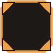
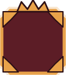

KADEME DİLİ


KİLİTLİ
 I
II
 II
IIII

IIIIII

IVIV
IVTAMAM
KOŞU İÇİ BİLDİRİM

BAŞARIM AÇILDI · KADEME III
ÖLDÜRME III
SONUÇ ÖZETİ
YENİ KADEME · 2Öldürme III, Hayatta Kalma II
KURALLAR
• Kademe = plaka silüeti (yalın · perçin · köşebent · taç) + Roma rozeti + baklava; renk yardımcıdır, tek kanal değildir.
• Gri tonlama sınaması: 04b — dört plaka yalnız silüetle ayrışır.
• Kademe başına yeni ikon yok: aile ikonu + plaka (modulate ile kilitli silüet).
• IV: bordo plaka + amber halo + taç; tamam: TAMAM çipi + tüm segmentler amber.
• Çoklu eşik aynı karede aşılırsa tek bildirim, en yüksek kademe.